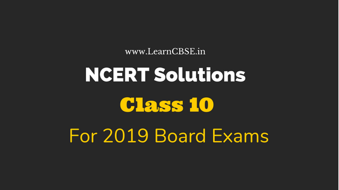

NCERT Solutions for Class 10 are solved by experts of LearnCBSE.in in order to help students to obtain excellent marks in their board examination. All the questions and answers that are present in the CBSE NCERT Books has been included in this page. We have provided all the Class 10 NCERT Solutions with a detailed explanation i.e., we have solved all the questions with step by step solutions in understandable language. So students having great knowledge over NCERT Solutions Class 10 can easily make a grade in their board exams. Read on to find out more about NCERT Solutions for Class 10.
NCERT Solutions for Class 10
Here we have provided Updated NCERT Solutions for Class 10 for 2020 CBSE Board Exams. NCERT Solutions clear your concepts to the core ensuring to stay with you in the long run. These are created by experts in accordance with the CBSE curriculum. You can find 100% accurate step-by-step solutions for every question in all the latest NCERT books. Practice with these daily to perform better in boards.
NCERT Solutions for Class 10 Maths
- Chapter 1 Real Numbers
- Chapter 2 Polynomials
- Chapter 3 Pair of Linear Equations in Two Variables
- Chapter 4 Quadratic Equations
- Chapter 5 Arithmetic Progressions
- Chapter 6 Triangles
- Chapter 7 Coordinate Geometry
- Chapter 8 Introduction to Trigonometry
- Chapter 9 Applications of Trigonometry
- Chapter 10 Circle
- Chapter 11 Constructions
- Chapter 12 Areas related to Circles
- Chapter 13 Surface Areas and Volumes
- Chapter 14 Statistics
- Chapter 15 Probability
NCERT Solutions for Class 10 Science
Here is the chapter-wise NCERT Solutions for class 10 science is listed below:
- Chapter 1 Chemical Reactions and Equations
- Chapter 2 Acids, Bases and Salts
- Chapter 3 Metals and Non-metals
- Chapter 4 Carbon and Its Compounds
- Chapter 5 Periodic Classification of Elements
- Chapter 6 Life Processes
- Chapter 7 Control and Coordination
- Chapter 8 How do Organisms Reproduce?
- Chapter 9 Heredity and Evolution
- Chapter 10 Light Reflection and Refraction
- Chapter 11 Human Eye and Colourful World
- Chapter 12 Electricity
- Chapter 13 Magnetic Effects of Electric Current
- Chapter 14 Sources of Energy
- Chapter 15 Our Environment
- Chapter 16 Management of Natural Resources
Important Questions for Class 10 Science
- Class 10 Chemical Reactions and Equations Important Questions
- Class 10 Acids Bases and Salts Important Questions
- Class 10 Metals and Non-metals Important Questions
- Class 10 Carbon and its Compounds Important Questions
- Class 10 Periodic Classification of Elements Important Questions
- Class 10 Life Processes Important Questions
- Class 10 Control and Coordination Important Questions
- Class 10 How do Organisms Reproduce Important Questions
- Class 10 Heredity and Evolution Important Questions
- Class 10 Light Reflection and Refraction Important Questions
- Class 10 Human Eye and Colourful World Important Questions
- Class 10 Electricity Important Questions
- Class 10 Magnetic Effects of Electric Current Important Questions
- Class 10 Sources of Energy Important Questions
- Class 10 Our Environment Important Questions
- Class 10 Management of Natural Resources Important Questions
NCERT Exemplar Class 10 Science Solutions
- Chemical Reactions and Equations NCERT Exemplar Solutions
- Acids Bases and Salts NCERT Exemplar Solutions
- Metals and Non-metals NCERT Exemplar Solutions
- Carbon and its Compounds NCERT Exemplar Solutions
- Periodic Classification of Elements NCERT Exemplar Solutions
- Life Processes NCERT Exemplar Solutions
- Control and Coordination NCERT Exemplar Solutions
- How do Organisms Reproduce NCERT Exemplar Solutions
- Heredity and Evolution NCERT Exemplar Solutions
- Light Reflection and Refraction NCERT Exemplar Solutions
- Human Eye and Colourful World NCERT Exemplar Solutions
- Electricity NCERT Exemplar Solutions
- Magnetic Effects of Electric Current NCERT Exemplar Solutions
- Sources of Energy NCERT Exemplar Solutions
- Our Environment
- Management of Natural Resources NCERT Exemplar Solutions
Extra Questions for Class 10 Science
- Chemical Reactions and Equations Class 10 Extra Questions
- Acids, Bases and Salts Class 10 Extra Questions
- Metals and Non-metals Class 10 Extra Questions
- Carbon and Its Compounds Class 10 Extra Questions
- Periodic Classification of Elements Class 10 Extra Questions
- Life Processes Class 10 Extra Questions
- Control and Coordination Class 10 Extra Questions
- How do Organisms Reproduce? Class 10 Extra Questions
- Heredity and Evolution Class 10 Extra Questions
- Light Reflection and Refraction Class 10 Extra Questions
- Human Eye and Colourful World Class 10 Extra Questions
- Electricity Class 10 Extra Questions
- Magnetic Effects of Electric Current Class 10 Extra Questions
- Sources of Energy Class 10 Extra Questions
- Our Environment Class 10 Extra Questions
- Management of Natural Resources Class 10 Extra Questions
NCERT Solutions for Class 10 Social Science History: India and the Contemporary World-II
- Chapter 1 The Rise of Nationalism in Europe
- Chapter 2 The Nationalist Movement in Indo-China
- Chapter 3 Nationalism in India
- Chapter 4 The Making of Global World
- Chapter 5 The Age of Industrialisation
- Chapter 6 Work, Life and Leisure
- Chapter 7 Print Culture and the Modern World
- Chapter 8 Novels, Society and History
NCERT Solutions for Class 10 Social Science Geography: Contemporary India-II
- Chapter 1 Resource and Development
- Chapter 2 Forest and Wildlife Resources (Extra Questions for Forest and Wildlife Resources)
- Chapter 3 Water Resources (Extra Questions for Water Resources)
- Chapter 4 Agriculture (Extra Questions for Agriculture)
- Chapter 5 Minerals and Energy Resources (Extra Questions for Minerals and Energy Resources)
- Chapter 6 Manufacturing Industries (Extra Questions for Manufacturing Industries)
- Chapter 7 Lifelines of National Economy
NCERT Solutions for Class 10 Social Science Civics (Political Science): Democratic Politics-II
- Chapter 1 Power Sharing
- Chapter 2 Federalism (Extra Questions for Federalism)
- Chapter 3 Democracy and Diversity (Extra Questions for Democracy and Diversity)
- Chapter 4 Gender Religion and Caste (Extra questions for Gender Religion and Caste)
- Chapter 5 Popular Struggles and Movements ( Extra Questions for Popular Struggles and Movement)
NCERT Solutions for Class 10 Social Science Economics: Understanding Economic Development – II
- Chapter 1 Understanding Economic Development
- Chapter 2 Sectors of Indian Economy
- Chapter 3 Money and Credit
- Chapter 4 Globalisation and the Indian Economy
- Chapter 5 Consumer Rights
NCERT Solutions for Class 10 Social Science Disaster Management
- Tsunami – The Killer sea Waves
- Survival Skills (Extra Questions Survival Skills)
- Alternative Communication Systems (Extra Questions Alternative Communication Systems)
- Safe Construction Practices (Extra Questions Safe Construction Practices)
- Sharing Responsibilities (Extra Questions Sharing Responsibilities)
- Planning Ahead
NCERT Solutions for Class 10 English Literature Reader
Fiction
- Chapter 1 Two Gentlemen of Verona
- Chapter 2 Mrs. Packletide’s Tiger
- Chapter 3 The Letter
- Chapter 4 A Shady Plot
- Chapter 5 Patol Babu, Film Star
- Chapter 6 Virtually True
Poetry
- Chapter 7 The Frog and the Nightingale
- Chapter 8 Mirror
- Chapter 9 Not Marble, nor the Gilded Monuments
- Chapter 10 Ozymandias
- Chapter 11 The Rime of the Ancient Mariner
- Chapter 12 Snake
Drama
NCERT Solutions for Class 10 English Language and Literature
NCERT Solutions for Class 10 English First Flight
NCERT Solutions for Class 10 English First Flight (Prose)
- Chapter 1 A Letter to God
- Chapter 2 Nelson Mandela: Long Walk to Freedom
- Chapter 3 Two Stories about Flying
- Chapter 4 From the Diary of Anne Frank
- Chapter 5 The Hundred Dresses – I
- Chapter 6 The Hundred Dresses – II
- Chapter 7 Glimpses of India
- Chapter 8 Mijbil the Otter
- Chapter 9 Madam Rides the Bus
- Chapter 10 The Sermon at Benares
- Chapter 11 The Proposal
NCERT Solutions for Class 10 English First Flight (Poem)
- Chapter 1 Dust of Snow
- Chapter 2 Fire and Ice
- Chapter 3 A Tiger in the Zoo
- Chapter 4 How to Tell Wild Animals
- Chapter 5 The Ball Poem
- Chapter 6 Amanda
- Chapter 7 Animals
- Chapter 8 The Trees
- Chapter 9 Fog
- Chapter 10 The Tale of Custard the Dragon
- Chapter 11 For Anne Gregory
NCERT Solutions for Class 10 English Footprints Without Feet
NCERT Solutions for Class 10 English Supplementary Reader Footprints without Feet
- Chapter 1 A Triumph of Surgery
- Chapter 2 The Thief’s Story
- Chapter 3 The Midnight Visitor
- Chapter 4 A Question of Trust
- Chapter 5 Footprints without Feet
- Chapter 6 The Making of a Scientist
- Chapter 7 The Necklace
- Chapter 8 The Hack Driver
- Chapter 9 Bholi
- Chapter 10 The Book that Saved the Earth
NCERT Solutions for Class 10 English Extended Reading Text / Novels / Long Reading Text
- The Story of My Life Summary By Helen Keller (Unabridged Edition)
- The Story of My Life By Helen Keller (Unabridged Edition)
OR - The Diary of a Young Girl Summary By Anne Frank
- The Diary of a Young Girl By Anne Frank
CBSE Class 10 English Main Course Book Solutions and Answers
CBSE Class 10 English Main Course Book MCB Solutions and Answers
Unit 1 Health and Medicine
- Health and Medicine Introduction
- A. Do Indians Get Enough Sleep ?
- B. Laughter – The Best Medicine
- C. “Whopping Walter” Hudson
- D. The World of Sports
- E. Nature’s Medicines
Unit 2 Education
- Education Introduction
- A. My struggle for an Education
- B. Educating the Girl Child
- C. Inclusive Education
- D. Vocational Education
Unit 3 Science
- Science Introduction
- A. Promise for the Future : Renewable Energy
- B. Pluggin into Future
- C. Space Travel
- D. Letters from the planet Aurigae II
Unit 4 Environment
- Environment Introduction
- A. Treading the Green Path: Towards Preservation
- B. Heroes of the Environment
- C. Let’s Clean up
- D. A Tale of Three Villages
- E. Geological Heritage
Unit 5 Travel and Tourism
- Travel and Tourism Introduction
- A. Land of All Seasons
- B. Eco Tourism
- C. The Emerald Islands
- D. Promoting Tourism
Unit 6 National Integration
- National Integration Introduction
- A. Unity in Diversity
- B. Challenges to National Integration
- C. Spirit of Unity
- D. Mile Sur Mera Tumhara
CBSE Class 10 English Workbook Solutions and Answers
NCERT Solutions for Class 10 English Workbook
- Unit 1 Determiners
- Unit 2 Tenses
- Integrated Grammar Practice 1
- Unit 3 Subject – Verb Agreement
- Unit 4 Non Finites
- Integrated Grammar Practice 2
- Unit 5 Relatives
- Unit 6 Connectors
- Integrated Grammar Practice 3
- Unit 7 Conditionals
- Unit 8 Comparison
- Integrated Grammar Practice 4
- Unit 9 Avoiding Repetition
- Unit 10 Nominalisation
- Integrated Grammar Practice 5
- Unit 11 Modals-Expressing Attitudes
- Integrated Grammar Practice 6
- Unit 12 Active and Passive
- Integrated Grammar Practice 7
- Unit 13 Reported Speech
- Integrated Grammar Practice 8
- Unit 14 Prepositions
- Integrated Grammar Practice 9
CBSE Class 10 English Reading
CBSE Class 10 English Writing
CBSE Class 10 English Grammar
A. Resource Material
- Tenses
- Modals
- Active and Passive Voice
- Subject-Verb Concord
- Direct and Indirect Speech
- Clauses
- Determiners
- Prepositions
B. Integrated Grammar
NCERT Solutions for Class 10 Hindi Kshitiz
NCERT Solutions for Class 10 Hindi Kshitij Bhag 2 क्षितिज भाग 2
काव्य – खंड
- Chapter 1 पद
- Chapter 2 राम-लक्ष्मण-परशुराम संवाद
- Chapter 3 सवैया और कवित्त
- Chapter 4 आत्मकथ्य
- Chapter 5 उत्साह और अट नहीं रही
- Chapter 6 यह दंतुरहित मुस्कान और फसल
- Chapter 7 छाया मत छूना
- Chapter 8 कन्यादान
- Chapter 9 संगतकार
गद्य – खंड
- Chapter 10 नेताजी का चश्मा
- Chapter 11 बालगोबिन भगत
- Chapter 12 लखनवी अंदाज़
- Chapter 13 मानवीय करुणा की दिव्या चमक
- Chapter 14 एक कहानी यह भी
- Chapter 15 स्त्री शिक्षा के विरोधी कुतर्कों का खंडन
- Chapter 16 नौबतखाने में इबादत
- Chapter 17 संस्कृति
NCERT Solutions for Class 10 Hindi Kritika
NCERT Solutions for Class 10 Hindi Kritika Bhag 2 कृतिका भाग 2
- Chapter 1 माता का आँचल
- Chapter 2 जॉर्ज पंचम की नाक
- Chapter 3 साना-साना हाथ जोड़ि
- Chapter 4 एही ठैयाँ झुलनी हेरानी हो रामा!
- Chapter 5 मैं क्यों लिखता हूँ?
NCERT Solutions for Class 10 Hindi – B
NCERT Solutions for Class 10 Hindi Sparsh
NCERT Solutions for Class 10 Hindi Sparsh Bhag 2 स्पर्श भाग 2
काव्य – खंड
- Chapter 1 साखी
- Chapter 2 पद
- Chapter 3 दोहे
- Chapter 4 मनुष्यता
- Chapter 5 पर्वत प्रदेश में पावस
- Chapter 6 मधुर-मधुर मेरे दीपक जल
- Chapter 7 तोप
- Chapter 8 कर चले हम फ़िदा
गद्य – खंड
- Chapter 9 आत्मत्राण
- Chapter 10 बड़े भाई साहब
- Chapter 11 डायरी का एक पन्ना
- Chapter 12 तताँरा-वामीरो कथा
- Chapter 13 तीसरी कसम के शिल्पकार शैलेंद्र
- Chapter 14 गिरगिट
- Chapter 15 अब कहाँ दूसरे के दुख से दुखी होने वाले
- Chapter 16 पतझर में टूटी पत्तियाँ
- Chapter 17 कारतूस
NCERT Solutions for Class 10 Hindi Sanchayan
NCERT Solutions for Class 10 Hindi Sanchayan Bhag संचयन भाग 2
NCERT Solutions for Class 10 Sanskrit
PART A – Class 10 Sanskrit NCERT Textbook
PART B – Class 10 Sanskrit NCERT Textbook
- Chapter 1 सङ्केताधारितम् अनौपचारिकपत्रम्
- Chapter 2 सङ्केताधारित: वार्त्तालापः
- Chapter 3 चित्राधारितम् वर्णनम्
PART C – Class 10 Sanskrit NCERT Textbook
PART D – Class 10 Sanskrit NCERT Textbook
- Chapter 1 सन्धि :
- Chapter 2 अव्ययानि
- Chapter 3 समासा :
- Chapter 4 प्रत्ययाः
- Chapter 5 वाच्यम्
- Chapter 6 कः समयः
- Chapter 7 सङ्खया
- Chapter 8 वचन -लिङ्ग-पुरुष -लकार -दॄष्ट्या संशोधनम
Section 1 – Class 10 Sanskrit NCERT Textbook
- Chapter 1 वाड्मयं तपः
- Chapter 2 आज्ञा गुरूणां हि अविचारणीया
- Chapter 3 किं किम् उपादेयम्
- Chapter 4 नास्ति त्यागसमम् सुखम्
- Chapter 5 अभ्यासवशगं मनः
Section 2 – Class 10 Sanskrit NCERT Textbook
- Chapter 6 साधुवृत्ति समाचरेत्
- Chapter 7 रमणीया की सृष्टि : ऐषा
- Chapter 8 तिरुक्कुरल्-सूक्ति -सौरभम्
- Chapter 9 राट्रं संरषयमेव ही
- Chapter 10 सुस्वागत भो ! अरुणाचलेऽस्मिन्
- Chapter 11 कालोऽहम्
NCERT Solutions for Class 10 Foundation of Information Technology (FIT)
- Internet Basics
- Internet Services
- Database Concepts
- Microsoft Access
- HTML (HyperText Markup Language)
- Inserting Images and Links in HTML
- Working with Tables in HTML
- Introduction to XML
- Societal Impacts of IT
Class 10 NCERT Solutions All Subjects

- NCERT Solutions for Class 10 Maths
- NCERT Solutions for Class 10 Science
- NCERT Solutions for Class 10 Social Science
- NCERT Solutions for Class 10 English
- NCERT Solutions for Class 10 English First Flight
- NCERT Solutions for Class 10 English Footprints Without Feet
- NCERT Solutions for Class 10 Hindi
- NCERT Solutions for Class 10 Hindi Sanchayan
- NCERT Solutions for Class 10 Hindi Sparsh
- NCERT Solutions for Class 10 Hindi Kshitiz
- NCERT Solutions for Class 10 Hindi Kritika
- NCERT Solutions for Class 10 Sanskrit
- NCERT Solutions for Class 10 Foundation of Information Technology
Preparation Articles
- How to Score Good Marks in Class 10 English?
- How to Attempt English Paper Class 10?
- How to write a Story in English Exam Class 10?
- Which Book is Best for English Class 10?
- Which section to attempt first in English Board Exam Class 10?
- How to Score Full Marks in Class 10 Maths?
- How to Prepare for Maths Board Exam Class 10?
- Which is the Best Reference Book for Class 10 Maths?
- How to Prepare for Science Board Exam Class 10?
- How to Study Social Science in Class 10?
- Which is the Best Reference Book for CBSE Class 10 Social Science?
- How to Score Good Marks in Class 10 Social Science?
Advantages of Solving NCERT Solutions for Class 10 from LearnCBSE.in
- All the Class 10 NCERT Textbook Solutions provided in this page are clear and concise in nature.
- NCERT Solutions for Class 10 Books are solved in easily understandable language to help students to grasp everything on the go.
- Accessible to everyone at any time anywhere without any difficulty.
- All the questions are solved strictly based on the NCERT (CBSE) Syllabus and Books. So mastering these solutions will definitely help students to score good marks in the examination.
- NCERT Solutions for Class X given in this page are of free of cost.
CBSE Class 10 study materials are given here in PDF files for all the subjects by LearnCBSE. Students can easily download these materials and can use it offline also. These materials are NCERT solutions for all the chapters, revision notes, syllabus, sample papers, previous year question papers and important questions of class 10th. Our subject experts and experienced teachers has designed these materials, as per the latest CBSE syllabus 2019-20. With the help of these materials, students can find it easy to prepare for their exams and score good marks.
Students are provided here with an opportunity to use these materials for free while doing the preparation for the 10th board exam. As we already know, grade 10th is important for all the academic students. The marks obtained in this board exam have an impact on students forthcoming education life. Therefore, it is necessary for them to secure excellent marks in the final exams. Based on these marks they could decide to select their subject of interest in 11th standard. Also, many students decides to get a job after 10th and many attempts to get colleges for diploma or inter studies. Therefore, LearnCBSE is trying to make the students prepared for all phase of the exams and get passed with flying numbers in 10th standard.
Student can solve complex problems with the help of solutions, where the best and easy methods are given to explain the concepts. Also, revision notes will help them to have a quick look on all the topics while preparing for examinations.
We hope the NCERT Solutions for Class 10 provided in this page helps in your board exam preparation.